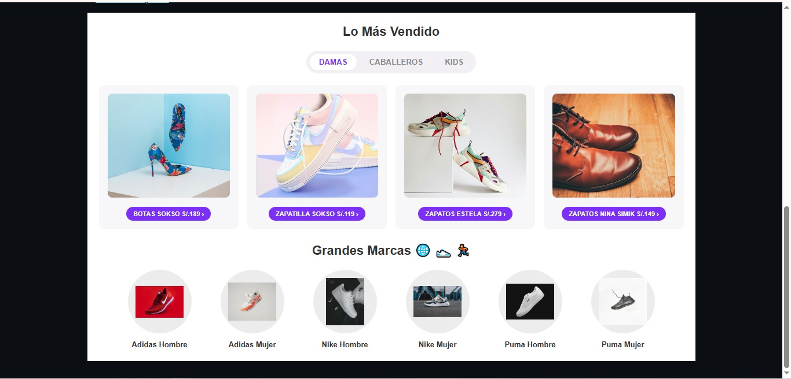
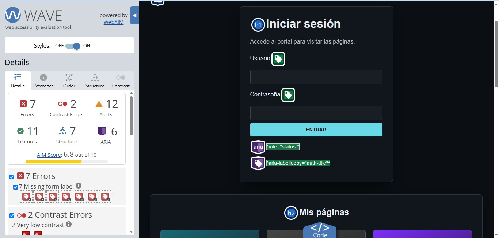
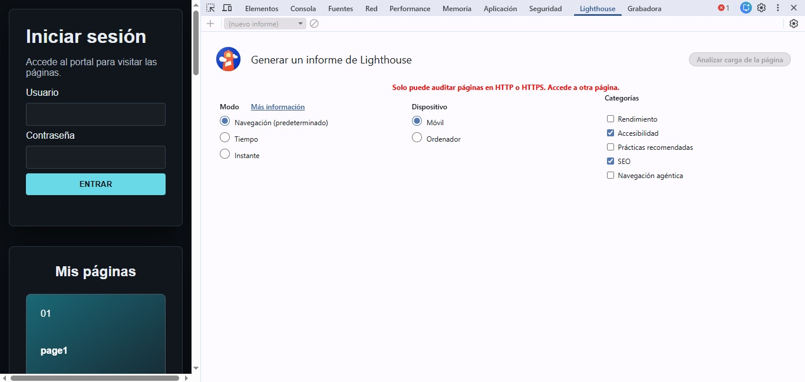

Bitácora de Aprendizaje ·
Temas tratados
Estructuración con HTML5 semántico y ARIA, accesibilidad web (A11y), diseños híbridos con CSS Grid y Flexbox, layout estilo Masonry puro en CSS, tipografía fluida y adaptación a preferencias del usuario (modo oscuro/claro y movimiento reducido).
¿Qué aprendí?
- Accesibilidad Web (A11y) y ARIA: importancia de implementar atributos como role, aria-label y enlaces de salto (skip-links) para garantizar la navegación por teclado y lectores de pantalla cumpliendo estándares WCAG AA.
- Layouts Híbridos (Grid + Flexbox) y Masonry: combinación de CSS Grid y Flexbox para layouts complejos y creación de galerías tipo Masonry sin necesidad de JavaScript usando columns y break-inside.
- CSS Moderno y Adaptabilidad: uso de funciones dinámicas como clamp(), calc() y variables CSS para tipografía fluida, junto con prefers-color-scheme y prefers-reduced-motion.
Laboratorio / Práctica
- Práctica Individual: Galería de Proyectos Técnicos totalmente responsiva con breakpoints en rem, alto contraste accesible y soporte navegable por teclado.
- Práctica Grupal: refuerzo y auditoría de la galería en equipo dividiendo roles especializados (HTML/A11y/SEO y CSS/Layout/Debug).
Herramientas y Validaciones
- W3C Validator: 0 errores de estructura.
- WAVE Extension: contraste y estructura accesible.
- Lighthouse: puntaje ≥90 en Accesibilidad y SEO.
- VS Code y GitHub.
Evidencias


